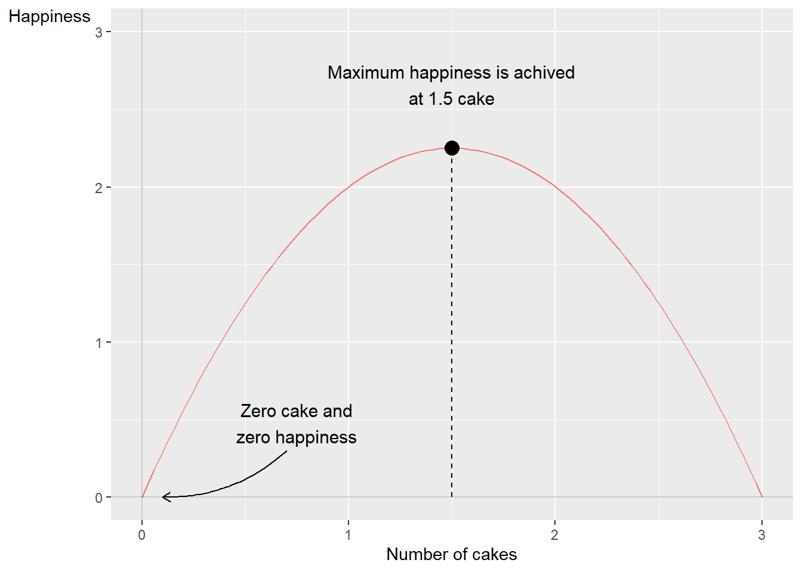
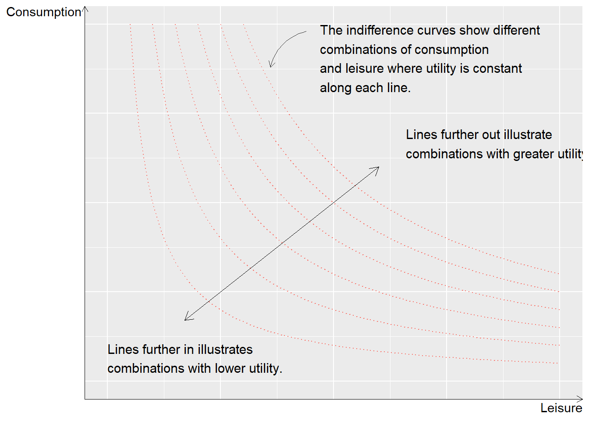
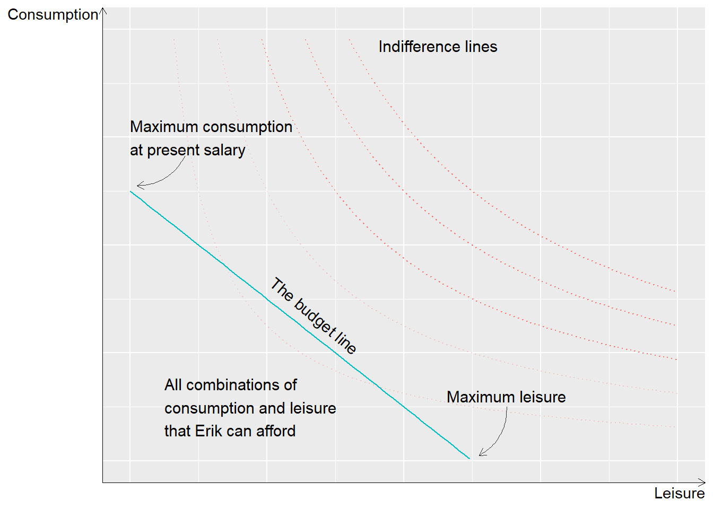
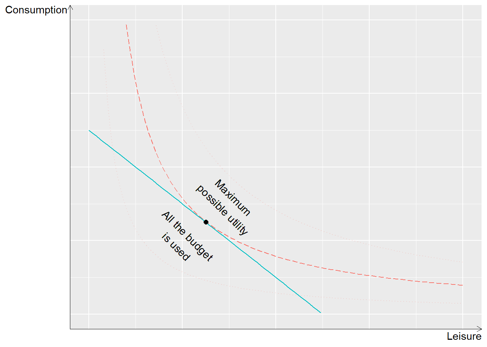
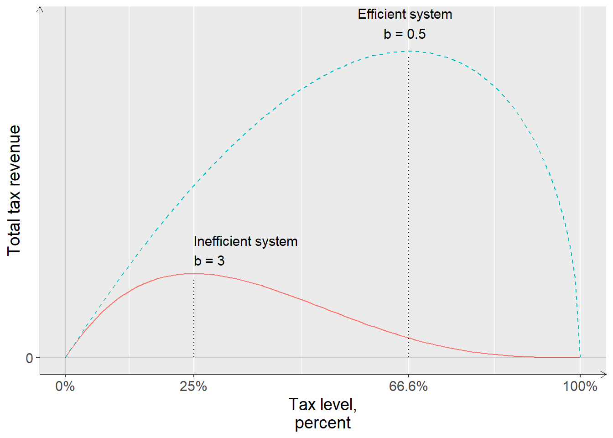
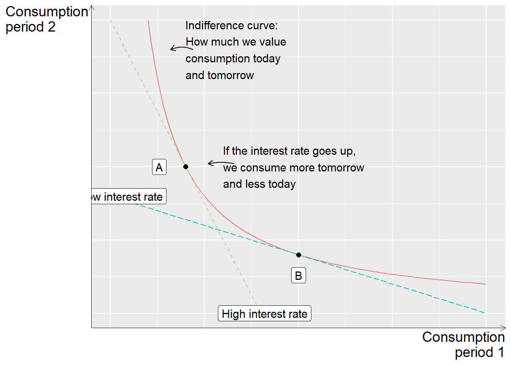
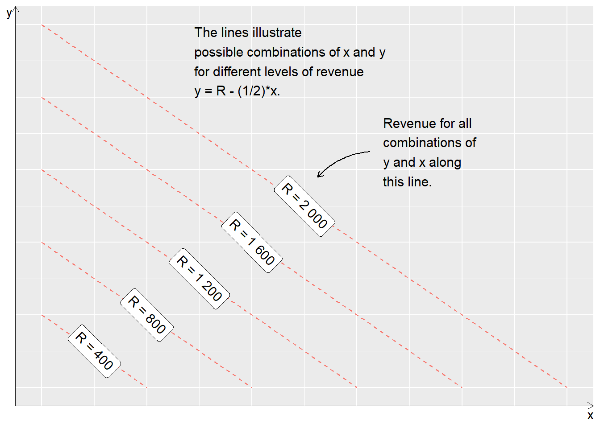
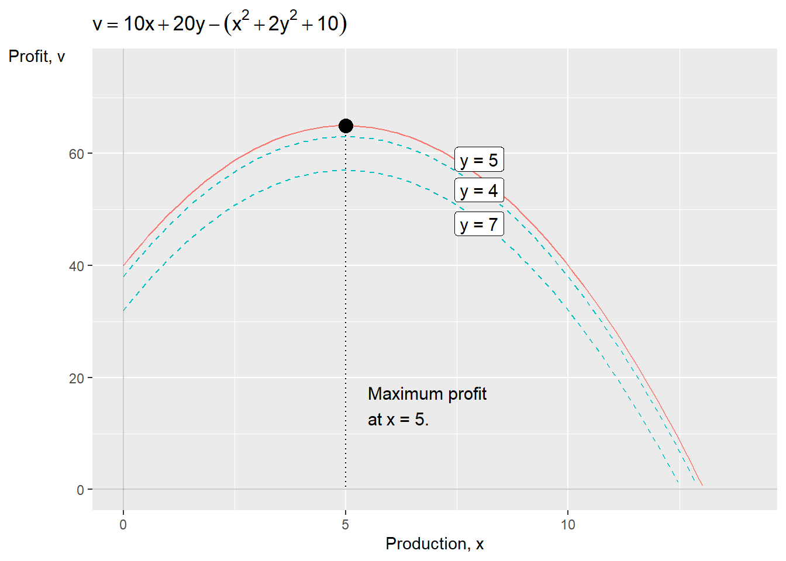
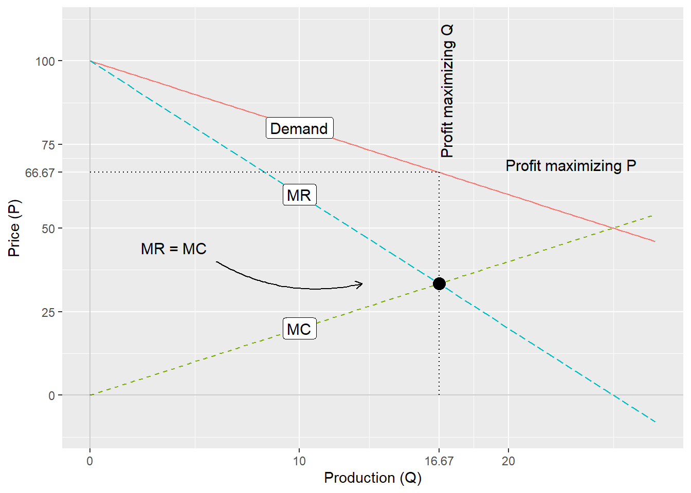
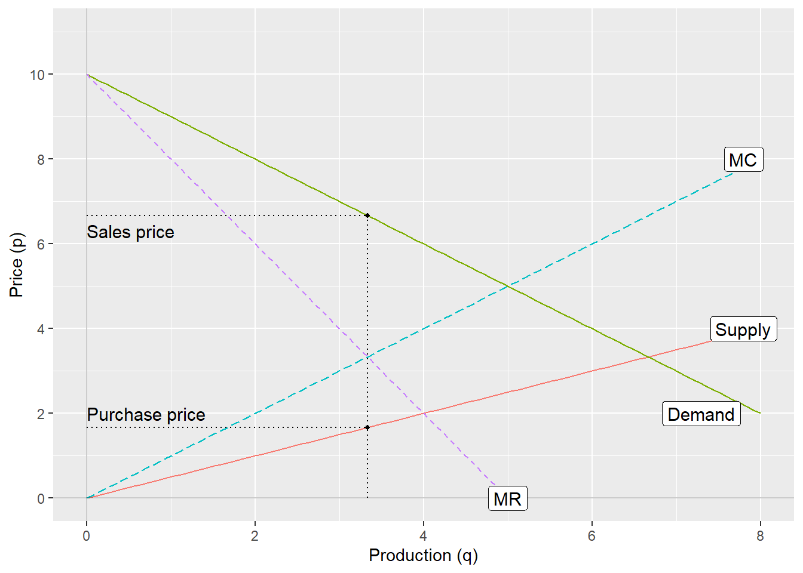

Chapter 12 Theories about cake and monopoly
In the previous chapter, we went through how we can use derivatives to search for a function’s extreme values, for example which input value in a variable gives the lowest or highest value in a function. This chapter shows examples of how we can use this type of methods to discuss theories about the world. The examples are simplified but inspired by more advanced theories within social science.
12.1 The optimal amount of cake
Cake is delicious but we get nauseous if we eat too much. Let us describe this with mathematics. We think that cake makes us happy and call the variable happiness \(y\). Suppose we measure happiness on a scale from 1 to 5, where 5 is the greatest possible conceivable happiness. Happiness, \(y\), is in turn a function, \(f\), of how many cakes we eat. We denote the number of eaten cakes as the variable \(x\). For each cake we consume, our happiness increases by 3 units, which we may describe with the function:
\[ \begin{equation} \text{Happiness}=y=f\left(x\right)=3x \end{equation} \]
The variable \(x\) is continuous and for each bite of cake we eat we become happier. But we also become more full and eventually our happiness start to decrease if we eat more. This negative effect on happiness we can insert into our function by adding the term \(-x^{2}\).
The term \(-x^{2}\) is quadratic, raised to the power of 2. This means that for low values, for example 0.5, the negative effect will be relatively small. For example: \(-\left(0.5\right)^{2}=-0.25\) or \(-\left(0.1\right)^{2}=-0.01\). But for higher values of \(x\) the negative effect will instead become increasingly larger, such as for example \(-\left(2\right)^{2}=-4\) or \(-\left(5\right)^{2}=-25\). The entire function is now:
\[ \begin{equation} y=f\left(x\right)=3x-x^{2} \tag{12.1} \end{equation} \]
This is a maximization problem where we choose the amount of cake to eat, \(x\), to maximize our happiness, \(y\):
\[ \begin{equation} \max_{\text{w.r.t. }x}f\left(x\right)=3x-x^{2} \end{equation} \]
To calculate which amount of cake leads to the greatest possible happiness we calculate the first and second derivatives of function \(f\) with respect to \(x\):
\[ \begin{align} f'_{x} & =3-2x\\ f''_{xx} & =-2\nonumber \tag{12.2} \end{align} \]
To find the happiness-maximizing amount of cake we set the first derivative \(f'_{x}\) equal to 0 and solve for \(x\):
\[ \begin{equation} x^{*}=\frac{3}{2}=1,5 \end{equation} \]
The second derivative \(f''_{xx}\) in equation (12.2) is negative. This indicates that \(x=1.5\) is a maximum point. The amount of cake that leads to the greatest possible happiness is one and a half cakes. To calculate the amount of happiness at \(x^{*}=1.5\) we take:
\[ \begin{align} f\left(x^{*}=1,5\right) & =3*1,5-\left(1,5\right)^{2}=4,5-2,25=2,25 \end{align} \]
One and a half cakes gives 2.25 in happiness, where happiness is measured on a scale from 1 to 5. However, exactly how much happiness is achieved through cake eating is not central in this example. Figure 12.1 illustrates this example and its solution. To the left and right of \(x=1.5\) we see that happiness is less than 2.25.

Figure 12.1: How cake may affect one’s happiness
Another way to describe this phenomenon is with the help of the concept of marginal effect. Generally, the concept of marginal effect refers to how a result changes with small changes in a variable. In this case, how much the total amount of happiness changes with small changes in the amount of cake.
We seek the amount of cake where marginal happiness equals 0, where the first derivative of function \(f\) is 0, \(f'_{x}=0\). The value of \(x\) where \(f'_{x}=0\) is an extreme point. If the second derivative is negative, small changes in \(x\) at \(x^{*}\) mean that happiness decreases. In that case, the extreme point is a local maximum point. Since equation (12.1) only has one maximum point, this is also a global maximum point, that is, the point where the happiness given by cake eating is the greatest possible.
The example is trivial but introduces the fundamental logical starting points in a large number of theories that occur abundantly within social science. Much social science theory can be formulated as people trying to achieve one or several goals, by choosing between different action alternatives. Many theories about human behavior are often formulated directly or indirectly as maximization or minimization problems.
Regardless of how ingenious a theoretical model may be, it says nothing in itself about how someone thinks when they are going to eat cake, or make any other type of decision. To know something about reality, we need information about reality. In Part II and III , commonly occurring methods for how we can study information about reality and compare against theory are introduced.
12.2 To work or not to work
The example with cake in the previous section is an abstract illustration of how an individual must choose the right level to get the best possible result from a situation. Now we shall look at a similar example but with a clearer connection to social science. Say that Erik shall maximize his utility, N, by choosing between the following:
Erik’s possibility to buy goods and services is financed through working and getting wages. This entire phenomenon we call \(C\).
Erik’s leisure time, which we denote \(L\).
Erik’s utility maximization thus depends on a choice between work and leisure. What effect \(C\) and \(L\) have on Erik’s utility we describe with the following function:
\[ \begin{equation} N=u\left(C,L\right)=C^{1/2}L^{1/2}\text{ , }\forall C,L>0 \tag{12.3} \end{equation} \]
where the utility \(N\) is explained by the function \(u\left(\right)\) with the included variables \(C\) and \(L\). Both variables can only assume positive values, since Erik cannot have negative consumption or leisure. The exponents for \(C\) and \(L\), the fraction 1/2, describe how much \(N\) increases when the respective variable changes by one unit, for example one USD and one clock hour respectively. The question is now at which amounts of \(C\) and \(L\) Erik’s utility is maximized.

Figure 12.2: The relationship between consumption and leisure with indifference curves
To better understand the utility function we start by illustrating the theoretical relationship, which is shown in figure 12.2 . The two-dimensional graph shows three variables: \(C\), \(L\) and \(N\), where each curved line shows a value for \(N\). The two axes in the graph, horizontal and vertical axis, measure consumption and leisure. Higher up along the vertical axis = more consumption. Further to the right along the horizontal axis = more leisure. The curved lines in the graph are called indifference curves. Along one and the same indifference curve, utility \(N\) is the same for different combinations of \(C\) and \(L\). This theory means that Erik is indifferent to exactly which combination of \(C\) and \(L\) it becomes, as long as we remain on the same line.
Erik can accept less leisure as long as he can compensate with greater consumption, up to the left in the graph, and less consumption if he can compensate with more leisure. The lines further away from the origin represent combinations of consumption and leisure that together result in greater utility. Erik’s consumption and leisure are also limited by Erik’s budget, which is determined partly by how much he chooses to work and partly by his wage. This condition can be described with the following budget function:
\[ \begin{align} C & =w\left(T-L\right)=wT-wL \tag{12.4} \end{align} \]
where \(w\) is wage, \(T\) is total available waking time and \(L\) is still leisure time. The parenthesis \(\left(T-L\right)\) describes how much leisure time Erik gives up and instead spends on work and thereby gets wages. The higher the wage, the less leisure needs to be sacrificed to consume the same amount of goods and services. The budget function can be used to draw a straight line in the graph with the indifference curves. Figure 12.3 illustrates the budget line and indifference curves. The two axes are consumption \(\left(C\right)\) and leisure \(\left(L\right)\).

Figure 12.3: The budget line and different indifference curves
If Erik spent all available time on work, \(L=0\), then \(C=wT\), a point along the vertical axis, consumption. This is the maximum amount of consumption that Erik can achieve, given the current wage. The line slopes negatively down toward the horizontal axis and the slope is determined by w. The budget function can therefore be written out as a straight diagonal line. Higher wage gives a steeper line and enables greater consumption higher up on the vertical axis. The further away from the origin that the budget line lies, the more Erik can consume. All combinations of consumption and leisure, C and L, within the budget line are possible to choose.
Given that Erik wants to maximize his utility and this works in the way that it is described in the utility function, Erik will choose a combination of consumption and leisure where one of the indifference curves just touches the budget line. This is illustrated in figure 12.4 with the budget line and three examples of indifference curves. As long as Erik has the same income, same budget line, and Erik’s utility can be described as it is done in the utility function, same shape of the indifference curves, this is the only logical result.

Figure 12.4: Maximum utility and budget
Why doesn’t he choose a point within the budget line? At every point within the budget line, the gray area in figure 12.3 , there is another point further away from the origin where Erik can get a greater amount of utility.
Why doesn’t he choose another point along the budget line? At every point on the budget line closer to the vertical or horizontal axis, Erik’s utility will instead be defined by another indifference curve closer to the origin, which thus means a smaller amount of total utility. Let us now set up Erik’s maximization problem:
\[ \begin{align} \max_{\text{w.r.t. }C,L} & C^{1/2}L^{1/2}\\ \text{under condition } & C\leq w\left(T-L\right)\nonumber \end{align} \]
This we solve by setting up the Lagrange function:
\[ \begin{equation} \mathcal{L}\left(C,L\right):C^{1/2}L^{1/2}+\lambda\left(wT-wL-C\right) \end{equation} \]
We take the derivative of \(\mathcal{L}\) with respect to \(C\) and \(L\) respectively:
\[ \begin{align} \mathcal{L}_{C}': & \frac{1}{2}C^{-1/2}L^{1/2}-\lambda\\ \mathcal{L}_{L}': & \frac{1}{2}C^{1/2}L^{-1/2}-\lambda w\nonumber \end{align} \]
From \(\mathcal{L}_{L}'\) we solve for \(\lambda\):
\[ \begin{equation} \lambda=\frac{1}{w}\frac{1}{2}C^{1/2}L^{-1/2} \end{equation} \]
This definition of \(\lambda\) we put into the first-order condition we got from \(\mathcal{L}_{C}'\):
\[ \begin{align} \frac{1}{2}C^{-1/2}L^{1/2} & =\frac{1}{w}\frac{1}{2}C^{1/2}L^{-1/2}\\ w & =\frac{\frac{1}{2}C^{1/2}L^{-1/2}}{\frac{1}{2}C^{-1/2}L^{1/2}}\nonumber \end{align} \]
This equation shows how wage w relates to Erik’s valuation of consumption \(C\) and leisure \(L\) at the point that maximizes Erik’s utility. In the numerator we have the first derivative of the utility function with respect to \(L\), \(u'_{L}\). In the denominator we have the first derivative of the utility function with respect to \(C\), which we write as \(u'_{C}\). We therefore rewrite this equation to:
\[ \begin{equation} w=\frac{u'_{L}}{u'_{C}} \end{equation} \]
This means exactly what we saw in figure 12.4 , where the utility-maximizing point on the budget line is the one where one of the curved indifference curves touches the budget line. At this point, the slope of the budget line which is determined by w, is the same as the slope of the indifference curve that touches the budget line, which is determined by the form of the utility function.
12.3 Maximum possible tax level
A large amount of social science deals with taxes and how they affect people’s lives. A well-known example is the so-called Laffer curve, named after the American economist Arthur Laffer. Corresponding theories within social science can be traced back to at least the 1400s.
We start by imagining that we have a society without taxes. People work and produce goods and services that are bought and sold. The total income in society we call \(y\), whose value is not decisive for the example. Now the government wants to introduce a tax that shall be set as a percentage rate on all incomes and is called \(t\). The tax \(t\) can be a value between 0 and 1, between 0 and 100%. The state’s total tax revenue, \(i\), can then be calculated to:
\[ \begin{equation} i=ty \tag{12.5} \end{equation} \]
If all incomes in society sum to 1,000 USD and the tax is 5%, the state’s tax revenue becomes \(i=ty=1000*0.05=50\) USD. The incomes that are taxed, \(y\), are also called the tax base. However, the tax also affects people’s willingness to work and pay tax. The higher the tax becomes, the less people want to work, which in turn brings down the state’s tax revenue. This mechanism we want to take into account in our equation over tax revenue. We therefore rewrite equation (12.5) so that we instead get the following expression:
\[ \begin{equation} i=ty\left(1-t\right)^{b} \tag{12.6} \end{equation} \]
The letter \(b\) indicates how the people in society react to a tax increase, which is also called tax base elasticity. If \(b\) is 0, people work exactly as much regardless of how high the tax is. A higher positive value of \(b\) means that tax increases have a greater negative effect on people’s willingness to work. A negative value \(b<0\) means that people work more at higher tax.
Equation (12.6) is an example of the Laffer curve. From this equation we see that if the tax is set to 100% then \(t=1\) and in that case the tax revenue becomes \(i=0\). So if the state wants to maximize its tax revenue, the tax must be set somewhere between 0 and 100%. To find the tax level that gives the greatest possible tax revenue we set this up as a maximization problem where we shall calculate the maximum of tax revenue \(i\) with respect to tax level \(t\):
\[ \begin{equation} \max_{\text{w.r.t. }t}i=ty\left(1-t\right)^{b} \end{equation} \]
To solve the maximization problem we take the derivative of \(i\) with respect to \(t\):
\[ \begin{equation} i'_{t}=y\left(1-t\right)^{b}-by\left(1-t\right)^{b-1}t \end{equation} \]
where we use the chain rule for derivatives (table 10.2 ). We then set the first derivative equal to 0 and solve for t using logarithms:
\[ \begin{align} y\left(1-t\right)^{b}-by\left(1-t\right)^{b-1}t & =0\\ \ln y+b\ln\left(1-t\right)-\ln b-\ln y-\ln t-\left(b-1\right)\ln\left(1-t\right) & =0\nonumber \\ \ln\left(1-t\right)-\ln t-\ln b & =0\nonumber \\ \ln\left(\frac{1-t}{t}\right) & =\ln b\nonumber \\ \frac{1}{t}-1 & =b\nonumber \\ t^{*} & =\frac{1}{1+b}\nonumber \end{align} \]
The definition of \(t^{*}\) in the last line gives us an expression for the greatest possible tax revenue, that is, the value for t that maximizes the variable \(i\). The greatest possible tax revenue depends on the tax base elasticity \(b\).
The government in our fictitious society wants to introduce tax but is uncertain about the value of \(b\). To get more clarity they compare with two other countries. Figure 12.5 describes the Laffer curves for these two societies that represent two different types of society. In the figure, both lines go toward 0 tax revenue as the tax level approaches 100%, where we imagine that no one wants to pay tax.

Figure 12.5: Two Laffer curves
In the first country, the public sector functions inefficiently. People have low trust in the political system and the taxes that the state collects are not used for anything that people benefit from. The taxes are designed in a complicated and inefficient way. The tax base elasticity is in this case \(b=3\). The greatest possible tax revenue is achieved in this case at a tax level of:
\[ \begin{equation} t\left(b=3\right)=\frac{1}{1+3}=0.25 \end{equation} \]
This means that if the state wants to maximize tax collection it must set the tax at 25%. All other tax levels result in lower total tax revenue. In the graph this is illustrated with the solid line at “Inefficient system”. The curve’s highest point is at \(t=0.25\). This means that already at a relatively low tax level, further increases in tax will cause total tax revenue to decrease.
In the second society, the public sector functions relatively well. The inhabitants get back for their tax money a large amount of services of good quality and have high trust in the political system. The tax system is moreover efficiently designed and easy to follow for those who want to. The tax base elasticity is in this case \(b=0.5\) and the greatest possible tax revenue is reached at the tax level:
\[ \begin{equation} t\left(b=0.5\right)=\frac{1}{1+0.5}=\frac{2}{3} \end{equation} \]
Expressed as a percentage, that corresponds to approximately 66.7%. In the graph this society is described with the dashed line, marked with “Efficient system”. This line’s highest point is at \(t=0.667\). This means that the government can continue to raise taxes to relatively high percentages before a further increase causes tax revenue to start decreasing.
12.4 Consumption and saving
A popular topic within social science is people’s relation to consumption and saving. If we think of consumption as the money people spend on goods and services today, we regard saving as consumption that is postponed to some time in the future. To the extent that we have the possibility to save something for the future, a common challenge is how much we should consume today and in the future respectively to become as satisfied as possible. Here follows a simple example of how we can use mathematics to describe this phenomenon.
The theoretical description here is a simplified version of what is called Fisher’s model for intertemporal choice, or intertemporal consumption. The word “intertemporal” refers to the theory describing how people make decisions in different time periods that affect later time periods. Irving Fisher was one of the early 1900s’ most famous economists and presented these ideas in his book Theory of Interest 1930, which can be read for free online. Let us assume that we divide the entire life into two time periods: 1 (today) and 2 (the future). We shall now use the following notations:
-\(c_{1},c_{2}\)= consumption during time period 1 and 2 respectively.
-\(y_{1},y_{2}\)= income during period 1 and 2.
-\(s_{1}\)= saving during time period 1.
-\(r\)= real interest rate plus 1. If the interest rate is 5%, then r=1.05. Real interest rate is nominal interest rate adjusted for price changes, see section 3.7 .
We also assume for simplicity’s sake that we consume all our income at the latest during time period 2. So if we consume our entire income during each respective time period we get \(c_{1}=y_{1}\) and \(c_{2}=y_{2}\), where the amount of consumption corresponds to the amount of income.
If we save a little during the first time period and consume the rest, we describe this as \(c_{1}=y_{1}-s_{1}\). In time period 2, the income will then be \(y_{2}+s_{1}*r\), where we multiply saving by interest rate to describe the interest income we received on our savings from time period 1. We therefore have two budget constraints, one for each time period:
\[ \begin{align} c_{1}+s_{1} & =y_{1}\\ c_{2} & =y_{2}+s_{1}*r\nonumber \end{align} \]
We solve for \(s_{1}=y_{1}-c_{1}\) from the first line and substitute into the second:
\[ \begin{align} c_{2} & =y_{2}+\left(y_{1}-c_{1}\right)r\\ c_{1}*r+c_{2} & =y_{1}*r+y_{2}\nonumber \end{align} \]
We can think of the interest rate \(r\) here as the price for consuming today, during time period 1. The interest rate \(r\) is therefore multiplied by \(c_{1}\). If we instead save for the future, the income today (time period 1) will have increased by the interest rate tomorrow (time period 2). The interest rate \(r\) is therefore also multiplied by \(y_{1}\). Let us now divide both sides by \(r\):
\[ \begin{equation} c_{1}+\frac{c_{2}}{r}=y_{1}+\frac{y_{2}}{r} \end{equation} \]
This version of the budget can be described as the value of consumption and income in period 2, adjusted for the interest rate. That is, \(c_{2}/r\) is the relative value of consumption in period 2, relative to consumption in period 1. Let us now also assume that increased consumption increases our utility. But we content ourselves with describing this only in abstract terms. Let us assume that there exists a mathematical function \(U\), which in some form describes what utility we get during life from our consumption during both time periods:
\[ \begin{equation} \text{Utility}=U\left(c_{1},c_{2}\right) \tag{12.7} \end{equation} \]
We imagine that our total utility function has the following properties:
\[ \begin{align} U\left(c_{1},c_{2}\right)'_{c_{1}}>0 & ,\,U\left(c_{1},c_{2}\right)'_{c_{2}}>0\\ U\left(c_{1},c_{2}\right)''_{c_{1}c_{1}}<0 & ,\,U\left(c_{1},c_{2}\right)''_{c_{2}c_{2}}<0\nonumber \end{align} \]
where the first line describes how the first derivative is positive for both \(c_{1}\) and \(c_{2}\)(more consumption, more utility). The second line describes how the second derivative is negative in both cases, which means that the more we consume, the less utility increases with additional consumption. The question is now how much we should consume during each respective time period. If the interest rate \(r\) is high, it may be wise to save a little to thereby be able to consume even more in time period 2, and vice versa. This we formulate as a maximization problem:
\[ \begin{align} \max_{\text{w.r.t.}c_{1},c_{2}} & U\left(c_{1},c_{2}\right)\\ \text{under condition } & c_{2}=y_{2}+\left(y_{1}-c_{1}\right)r\nonumber \end{align} \]
We have a utility function that shall be maximized subject to a budget constraint. We set up the Lagrange function (see section 11.6 ):
\[ \begin{equation} \mathcal{L}:U\left(c_{1},c_{2}\right)+\lambda\left(y_{2}+\left(y_{1}-c_{1}\right)r-c_{2}\right) \end{equation} \]
where \(\lambda\) is the Lagrange multiplier. The first-order conditions we get by differentiating \(\mathcal{L}\) with respect to \(c_{1}\) and \(c_{2}\) and setting the results equal to 0:
\[ \begin{align} \mathcal{L}'_{c_{1}}:U'_{c_{1}}+\lambda\left(-r\right) & =0\\ \mathcal{L}'_{c_{2}}:U'_{c_{2}}+\lambda\left(-1\right) & =0\nonumber \end{align} \]
From this we solve for different definitions of \(\lambda\) from both conditions. The first first-order condition gives:
\[ \begin{equation} \lambda=\frac{U'_{c_{1}}}{r} \end{equation} \]
From the second first-order condition we get:
\[ \begin{equation} \lambda=U'_{c_{2}} \end{equation} \]
We set the two definitions for \(\lambda\) equal to each other and rewrite:
\[ \begin{equation} \frac{U_{c_{1}}'}{U_{c_{2}}'}=\frac{1}{r} \tag{12.8} \end{equation} \]
This expression describes how the marginal utility of consumption in time period 1, divided by the marginal utility of consumption in time period 2 will be equal to 1 divided by the real interest rate. That is, if the interest rate rises we have greater utility from consumption in period 2. This is logical in the sense that the consumption we postpone becomes worth more. The result is illustrated in figure 12.6 . The two straight lines describe two different interest rate levels: one line if the interest rate is “low” and one line if the interest rate is “high”. Both these lines are drawn from the budget constraint: \(c_{2}=y_{2}+\left(y_{1}-c_{1}\right)r\). The line’s slope is given by r, which is illustrated in the figure. The line’s y-intercept is given by the incomes \(y_{1}\) and \(y_{2}\) as well as saving in period 1: \(y_{1}-c_{1}\). The curved line, the indifference curve, describes our preferences for consumption today and tomorrow respectively and is given by the utility function \(U\left(c_{1},c_{2}\right)\).

Figure 12.6: Consume today or tomorrow
The lines in this figure can be compared with those in figure 12.4 . There may be many straight lines depending on our budget. If our incomes increase, the straight lines’ y-intercept moves up to the right in the graph, away from the origin. The curved line shows where the budget lines meet our preferences. The curved line touches the budget line since we use our entire budget and consume all our income during period 1 and 2. Now we shall develop the theory a little further by adding impatience. Say that our total utility function in equation (12.7) can be divided into two separate functions, one for each time period:
\[ \begin{equation} \text{Utility }=U\left(c_{1},c_{2}\right)=U\left(c_{1}\right)+\beta U\left(c_{2}\right) \end{equation} \]
We have the same relation to consumption in both time periods. The function U therefore also has the same form in both periods, but different input values: \(c_{1}\) and \(c_{2}\) respectively. The multiplier \(\beta\)(Greek letter beta) describes how much we value future consumption, the consumption that takes place in time period 2. Or expressed differently, how impatient we are. High \(\beta\)= we are patient. Low \(\beta\)= we are impatient. Say now that the first derivative of function U for each respective variable only contains the variable that we differentiate with respect to:
\[ \begin{align} U\left(c_{1}c_{2}\right) & '_{c_{1}}=U'_{c_{1}}\left(c_{1}\right)\\ U\left(c_{1}c_{2}\right)'_{c_{2}} & =\beta U'_{c_{2}}\left(c_{2}\right)\nonumber \end{align} \]
In that case we may rewrite our result in equation (12.8) to the following:
\[ \begin{align} \frac{U'_{c_{1}}\left(c_{1}\right)}{\beta U_{c_{2}}'\left(c_{2}\right)} & =\frac{1}{r} \end{align} \]
This is almost the same thing as our first result. The difference now is that our valuation of consumption in period 1 and 2 respectively also depends on how highly we value future consumption, that is, the value of \(\beta\). A smaller value for \(\beta\) means that we are more impatient and value consumption today (period 1) higher than consumption in the future (period 2).
The example in this section illustrates how we can use maximization problems to reason about decisions that affect the outcome both today and later. Similar mathematics can be used to reason about all possible types of decisions that have more or less long-term effects.
12.5 A profit-maximizing company
A company manufactures the two products \(X\) and \(Y\) and wants to maximize its profit. The amount of produced units of the two products we denote with \(x\) and \(y\). The selling prices for the two goods are controlled by the market, which the company cannot influence. The company can, however, choose how large an amount of the products should be produced.
For product \(x\) we have price \(p_{x}=10\) and for product \(y\) we have \(p_{y}=20\). The company’s revenue can be described as a function of price multiplied by quantity. The function for total revenue we call \(TR\) after total revenue:
\[ \begin{align} \text{Total revenue}=TR\left(x,y\right) & =p_{x}x+p_{y}y=10x+20y \tag{12.9} \end{align} \]
From equation (12.9) we solve for \(y\):
\[ \begin{align} TR & =10x+20y \end{align} \]
Different combinations of the quantities \(x\) and \(y\) can result in equally large revenues. Say that the company wants the revenue to be equal to 2,000 USD. This can be achieved by producing 100 of \(y\) and 0 of \(x\), or producing 0 of \(y\) and 200 of \(x\). Or 80 of \(y\) and 40 of \(x\), and so on. This we may describe in the following way:
\[ \begin{equation} y=2,000-\frac{1}{2}x,\,\forall x,y\geq0 \end{equation} \]
In the same way we set up this equation for other sums in total revenue and illustrate these as lines in a diagram. Figure 12.7 shows this for the following equations:
\[ \begin{align} y & =2,000-0.5x\\ y & =1,600-0.5x\nonumber \\ y & =1,200-0.5x\nonumber \\ y & =800-0.5x\nonumber \\ y & =400-0.5x\nonumber \end{align} \]

Figure 12.7: Company revenue from product \(x\) and \(y\)
The total production costs consist of fixed expenses of 10 USD and variable costs for manufacturing products \(X\) and Y:
\[ \begin{equation} \text{Total cost}=TC\left(x,y\right)=x^{2}+2y^{2}+10 \tag{12.10} \end{equation} \]
where \(TC\) is the name of the function. The company’s profit is equal to revenue minus costs, \(TR-TC\), which we may write as a function, \(V\):
\[ \begin{align} V\left(x,y\right) & =TR-TC=10x+20y-\left(x^{2}+2y^{2}+10\right) \end{align} \]
The profit is a function of the quantities \(x\) and \(y\), which can be described as the company wanting to maximize its profit by choosing the amount to produce of \(x\) and \(y\):
\[ \begin{equation} \max_{\text{\text{w.r.t\emph{.}} }x,y}V\left(x,y\right)=10x+20y-\left(x^{2}+2y^{2}+10\right) \end{equation} \]
This problem we solve by taking the derivative of \(V\) with respect to \(x\) and \(y\). We do this because we are looking for a maximum point where the first derivative is equal to 0 and the second derivative is negative. The first derivative of \(V\left(x,y\right)\) with respect to \(x\) and \(y\) respectively:
\[ \begin{align} V'_{x} & =10-2x\\ V'_{y} & =20-4y\nonumber \tag{12.11} \end{align} \]
We now have two expressions that describe how \(V\) changes when \(x\) and \(y\) respectively increase by one unit. We set the expressions in equation (12.11) equal to 0, which gives us the first-order conditions, and solve for \(x\) and \(y\). These values for \(x\) and \(y\) are the solutions we are looking for, which we write as \(x^{*}\) and \(y^{*}\):
\[ \begin{align} x^{*} & =10/2=5\\ y^{*} & =20/4=5\nonumber \end{align} \]
We also see that the second derivative of \(V\) with respect to \(x\) and \(y\) is negative by differentiating the expressions in equation (12.11) once more:
\[ \begin{align} V''_{xx} & =-2\\ V''_{yy} & =-4\nonumber \end{align} \]
Another way to describe what we just did is marginal effect and marginal profit. The marginal effect refers here to how much V changes with small changes in the variables \(x\) and \(y\).
The profit is maximized when the marginal profit is equal to 0, that is, when the first derivative of \(V\) is \(V_{x}'=0\) and \(V'_{y}=0\). Let us calculate how much profit the company will make by substituting these values for \(x^{*}\) and \(y^{*}\) into \(V\left(x^{*},y^{*}\right)=V\left(5,5\right)\):
\[ \begin{align} V\left(5,5\right)= & 10*5+20*5-\left(5^{2}+2*5^{2}+10\right)=65 \end{align} \]
Given the prices \(p_{x}=10\) and \(p_{y}=20\) and current production costs, the company can maximize its profit by producing 5 units of product A and 5 units of product B, and then makes a profit of 65 USD. The company’s total costs are given by equation (12.10) . If we take the first derivative with respect to x and y of this function we get the company’s marginal cost, \(MC\), marginal cost:
\[ \begin{align} MC_{x}=C'_{x} & =2x\\ MC_{y}=C'_{y} & =2y\nonumber \end{align} \]
The profit is optimized at \(\left(x^{*},y^{*}\right)=\left(5,5\right)\), where the marginal costs are:
\[ \begin{align} MC_{x}=C'_{x}\left(x^{*}\right) & =2*5=10\\ MC_{y}=C'_{y}\left(y^{*}\right) & =2*5=10\nonumber \end{align} \]
If the company produces the quantities 5 of \(x\) and 5 of \(y\), the marginal costs, at exactly this production quantity, are equal to 10 with respect to \(x\) and 10 with respect to \(y\). The company thus maximizes its profit when the marginal cost is equal to the price for the products, given that the price is determined by the market:
\[ \begin{equation} P^{*}=MC \tag{12.12} \end{equation} \]
If we imagine that perfect competition prevails, all companies have the same cost and revenue functions. All companies will in that case produce in this way, so that \(P^{*}=MC\). At the production quantities \(y=5\) and \(x=5\), profit in the company is maximized. If the company produces more or less of product \(X\) or \(Y\) than these amounts, the profit will be smaller. Figure 12.8 shows an illustration of this. For each given production quantity of \(y\), the line in the diagram shows the relationship between profit and produced quantity \(x\).

Figure 12.8: Profit maximization
The profit can still be above 0 for other values of \(x\) and \(y\) but since other values also result in other costs, the profit will then be smaller. The dashed lines below the solid line in the figure illustrate that for both larger and smaller values for \(y\), the total profit will be smaller for all other \(x\)-values.
12.6 Profit maximization with constraints
Suppose now that we have a profit-maximizing company, but this time we add a constraint in the form of the company’s production. The company sells a good where the price, \(p\), is determined by the market. The company’s costs for production are given by the function:
\[ \begin{equation} TC=10+q^{2}+wL \end{equation} \]
The letter \(q\) is the amount of production that the company delivers, \(w\) is the wage for the company’s employees and \(L\) the number of full-time employees, or full-time positions. The wages, \(w\), are also determined by the outside world, in this case the labor market.
The company can, however, choose how much it should produce \(\left(q\right)\) and how many full-time positions it should have \(\left(L\right)\). The company’s production is determined by the function:
\[ \begin{equation} q\left(L\right)=2L \end{equation} \]
This is a simplified example of what in economics is called a production function. The production function describes the relationship between the company’s inputs and its production, \(q\). In this case, the company’s only input is labor, \(L\). The demand for the company’s products is given by the function:
\[ \begin{align} q & =100-4p \end{align} \]
From this equation we solve for an expression for \(p\):
\[ \begin{equation} p=25-\frac{q}{4} \end{equation} \]
Total revenue is given by the function:
\[ \begin{align} TR & =pq=\left(25-\frac{q}{4}\right)q=25q-\frac{q^{2}}{4} \end{align} \]
The company’s profit is now given by the function:
\[ \begin{align} V & =TR-TC=25q-\frac{q^{2}}{4}-\left(10+q^{2}+wL\right) \end{align} \]
The wage on the labor market for the company’s employees is \(w=2\):
\[ \begin{equation} V=25q-\frac{q^{2}}{4}-\left(10+q^{2}+2L\right) \end{equation} \]
We must also take into account the constraint, which is a result of the company’s production conditions (the production function):
\[ \begin{equation} 2L\geq q \end{equation} \]
This means that \(q\) must be less than or equal to 5 times the number of full-time positions, \(L\). This is important because the company maximizes its profit, \(V\), by choosing production quantity, \(q\), and number of full-time employees, \(L\). All this we set up as a maximization problem:
\[ \begin{equation} \max_{\text{w.r.t. }q,L}V=25q-\frac{q^{2}}{4}-\left(10+q^{2}+2L\right),\text{ s.t. }2L\geq q \end{equation} \]
To solve this we set up the Lagrange function:
\[ \begin{equation} \mathcal{L}\left(q,L\right)=25q-\frac{q^{2}}{4}-10-q^{2}-2L+\lambda\left(2L-q\right) \end{equation} \]
where \(\lambda\) is the Lagrange multiplier. We differentiate with respect to \(q\) and \(L\), which leads us to the first-order conditions:
\[ \begin{align} \mathcal{L}'_{q} & =25-\frac{2}{4}q-2q-\lambda\\ \mathcal{L}'_{L} & =-2+\lambda2\nonumber \end{align} \]
We put \(\mathcal{L}'_{L}=0\) and solve for \(\lambda\):
\[ \begin{equation} \lambda^{*}=\frac{2}{2}=1 \end{equation} \]
We put \(\lambda^{*}\) in \(\mathcal{L}'_{q}\) and solve for \(q^{*}\):
\[ \begin{align} 25-\frac{2}{4}q-2q-1 & =0\\ 24 & =q\left(2+\frac{1}{2}\right)\nonumber \\ q & =\frac{24}{5/2}\nonumber \\ q^{*} & =48/5=9.6\nonumber \end{align} \]
From the production function we see that:
\[ \begin{align} q^{*} & =2L\\ 9,6 & =2L\nonumber \\ L^{*} & =4.8\nonumber \end{align} \]
This results in the following profit:
\[ \begin{align} V\left(q^{*},L^{*}\right) & =25q-\frac{q^{2}}{4}-\left(10+q^{2}+2L\right)=124.4 \end{align} \]
12.7 Monopoly
Let us take another example with a company that sells goods or services on a market, but this time we assume that the company has a monopoly on the market. Monopoly means that the company is the sole seller and thereby has power to influence both price and quantity. In section 12.5 above we went through an example where companies in competition had to accept the price that the market determines for its goods or services. The monopoly seller can instead choose to produce a smaller quantity at a higher price and thereby make greater profit. Let us illustrate with an example. A company produces the quantity \(Q\) of a good, which entails total costs corresponding to:
\[ \begin{equation} TC=10+Q^{2} \tag{12.13} \end{equation} \]
\(TC\) is abbreviation for Total Cost. The company’s customers demand goods in relation to price \(P\) in a way that we can describe with the function:
\[ \begin{align} \text{Demand: }Q & =20-\frac{P}{5}\\ \Rightarrow P & =100-2Q\nonumber \tag{12.14} \end{align} \]
Total revenue is given by the function \(TR\) which consists of price multiplied by the quantity of production \(Q\):
\[ \begin{align} TR & =PQ=\left(100-2Q\right)Q=100Q-2Q^{2} \tag{12.15} \end{align} \]
The monopolist wants to maximize its profit \(V\), which is a result of revenue minus costs:
\[ \begin{align} \max_{Q,P}V & =TR-TC\\ & =PQ-TC\nonumber \\ & =Q\left(100-2Q\right)-\left(10+Q^{2}\right)\nonumber \\ & =100Q-2Q^{2}-10-Q^{2}\nonumber \\ & =100Q-3Q^{2}-10\nonumber \tag{12.16} \end{align} \]
To get the first-order condition we differentiate the function \(V\) with respect to the variable \(Q\):
\[ \begin{equation} V'_{Q}=100-6Q \end{equation} \]
We set this expression equal to 0 and solve for the profit-maximizing production quantity:
\[ \begin{align} 100-6Q & =0\\ Q & =\frac{100}{6}\nonumber \\ Q^{*} & =16+\frac{2}{3}\nonumber \end{align} \]
The monopoly company maximizes its profit at \(Q^{*}=16+\frac{2}{3}\), whereupon the selling price is given by customers’ demand, equation (12.14) :
\[ \begin{align} P^{*}\left(Q^{*}\right) & =100-2Q^{*}=100-2*\left(16+\frac{2}{3}\right)=66+\frac{2}{3} \end{align} \]
The company’s total profit is given by the function for \(V\), equation(12.16) :
\[ \begin{align} V\left(Q^{*}\right) & =100Q-3Q^{2}-10\\ & =100\left(16+\frac{2}{3}\right)-3\left(16+\frac{2}{3}\right)^{2}-10\nonumber \\ & =823+\frac{1}{3}\nonumber \end{align} \]
On a hypothetical market with so-called perfect competition, the equilibrium price on the market will approach the marginal cost. Perfect competition is a hypothetical state that rarely or never occurs in reality. Regardless, we may describe this price level in the following way:
\[ \begin{equation} P^{*}=MC \end{equation} \]

Figure 12.9: Monopoly
This we saw in the example in section 12.5 . As seen in equation (12.15) , total revenue \(TR\) is a function of the variable \(Q\). If we take the first derivative of this function we get the function for the monopoly company’s marginal revenue, \(MR\):
\[ \begin{equation} MR=TR'_{Q}=100-4Q \tag{12.17} \end{equation} \]
When the company produces the profit-maximizing quantity \(Q^{*}=16+2/3\) this gives marginal revenue:
\[ \begin{align} MR\left(Q^{*}\right) & =100-4Q=100-4\left(16+2/3\right)=33+\frac{1}{3} \end{align} \]
The function for total costs, equation (12.13) , is also a function of the variable \(Q\). If we take the first derivative of this we get the function for the company’s marginal costs, \(MC\):
\[ \begin{equation} MC=TC'_{Q}=2Q \end{equation} \]
which at the profit-maximizing production quantity \(Q^{*}=16+2/3\) is:
\[ \begin{align} MC\left(Q^{*}\right) & =2Q=2\left(16+2/3\right)=33+\frac{1}{3} \end{align} \]
This is the same result as we found for \(MR\left(Q^{*}\right)\). A profit-maximizing monopoly company produces quantity \(Q\) where \(MR=MC\), while profit-maximizing companies in perfect competition produce a quantity so that \(MC=P^{*}\). Figure 12.9 illustrates the monopoly company’s pricing, where the equilibrium quantity is determined by the point where the curves for \(MR\) and \(MC\) meet. The purpose of this exercise is primarily to see how the behavior of companies in competition can differ from companies with monopoly. The reasoning is simplifications of reality and builds on specific assumptions.
12.8 Monopsony
Monopsony describes a situation when instead of a single seller (monopoly) we have a single buyer, which in turn means that the buyer has power to influence the conditions for their purchases, both quantity and price. In reality, elements of monopsony occur in, for example, geographically delimited areas and in markets that are subject to special laws. Monopsony can also occur in the labor market, for example if there is only one or a few companies that employ a certain type of professional group. Let us illustrate with an example. Assume that a company buys quantity q of a good at price p. The supply for the good on the market is given by the function:
\[ \begin{align} \text{Supply: }q & =2p_{\text{purchases}} \tag{12.18} \end{align} \]
We start by solving for a definition of the purchase price \(p\):
\[ \begin{equation} p_{\text{purchases}}=\frac{q}{2} \tag{12.19} \end{equation} \]
The company in turn uses the purchased good to produce its own goods. Total manufacturing costs, \(tc\), are given by price multiplied by quantity:
\[ \begin{equation} tc=p_{\text{purchases}}q \tag{12.20} \end{equation} \]
We substitute the definition of \(p_{\text{inköp}}\) from equation (12.19) into the equation for \(tc\):
\[ \begin{align} tc & =p_{\text{purchases}}q=\left(\frac{q}{2}\right)q=\frac{q^{2}}{2} \end{align} \]
The first derivative of \(tc\) with respect to \(q\) gives us the marginal cost \(mc\):
\[ \begin{equation} mc=tc'_{q}=q \tag{12.21} \end{equation} \]
The company produces goods, whose demand is determined by the function:
\[ \begin{align} \text{Demand: }q & =10-p_{\text{sales}} \tag{12.22} \end{align} \]
We simplify a little and use the designation \(q\) also for this good. We may think of this example as the company purchasing an input-good to its own production. From this function for demand we solve for the company’s selling price for its own goods:
\[ \begin{equation} p_{\text{sales}}=10-q \tag{12.23} \end{equation} \]
The company’s total revenue, \(tr\):
\[ \begin{align} tr & =p_{\text{sales}}q \end{align} \]
We take \(p_{\text{sales}}\) from equation (12.23) and substitute into the equation for \(tr\):
\[ \begin{align} tr & =\left(10-q\right)q=10q-q^{2} \tag{12.24} \end{align} \]
From this expression for total revenue we take the first derivative with respect to \(q\), which gives us marginal revenue \(mr\):
\[ \begin{equation} mr=tr'_{q}=10-2q \tag{12.25} \end{equation} \]
The company’s profit \(v\) is total revenue \(tr\) minus total cost \(tc\):
\[ \begin{align} v & =tr-tc \end{align} \]
We replace \(tc\) and \(tr\) with the definitions from equation (12.20) and (12.24) :
\[ \begin{align} v\left(q\right) & =\left(10q-q^{2}\right)-\frac{q^{2}}{2}=10q-\frac{3}{2}q^{2} \end{align} \]
The function for the company’s profit \(v\left(q\right)\) is determined by what quantity \(q\) the company chooses to purchase and produce. Based on this we formulate the company’s maximization problem:
\[ \begin{equation} \max_{q}v\left(q\right)=10q-\frac{3}{2}q^{2} \end{equation} \]
To solve the maximization problem we take the first derivative of the profit function \(v\left(q\right)\) with respect to the variable \(q\):
\[ \begin{equation} v'_{q}=10-3q \end{equation} \]
We set this expression equal to 0 to get the first-order condition:
\[ \begin{equation} v'_{q}:\,10-3q=0 \end{equation} \]
From this we may solve for \(q\), the quantity that maximizes the company’s profit:
\[ \begin{equation} q^{*}=\frac{10}{3}\approx3,33 \end{equation} \]
As before, we mark this quantity with an asterisk, \(q^{*}\). The purchase price for the good that the company is the sole buyer of is given by the supply function, equation (12.18) :
\[ \begin{align} p_{\text{purchases}}\left(q^{*}\right) & =\frac{q^{*}}{2}=\frac{10/3}{2}=\frac{5}{3} \end{align} \]
The selling price for the company’s own production is given by equation (12.23) :
\[ \begin{align} p_{\text{sales}}\left(q^{*}\right) & =10-q^{*}=10-\frac{10}{3}=\frac{20}{3} \end{align} \]
The company’s marginal cost \(mc\) at \(q^{*}\) is given by equation (12.21) :
\[ \begin{align} mc\left(q^{*}\right) & =q^{*}=\frac{10}{3} \end{align} \]
and the company’s marginal revenue \(mr\) is given by equation (12.25) :
\[ \begin{align} mr\left(q^{*}\right) & =10-2q^{*}=10-2*\left(\frac{10}{3}\right)=\frac{10}{3} \end{align} \]
The company will maximize its profit by choosing such a quantity so that the company’s marginal revenue is equal to its marginal costs, \(mr=mc\). When we went through examples with companies in markets with perfect competition we could instead see that the company’s production occurs where the marginal costs are equal to the market price \(P^{*}=MC\), equation (12.12) .
Figure 12.10 illustrates profit maximization for monopsony according to the model we have now gone through. The lines show the company’s marginal cost \(mc\), marginal revenue \(mr\), demand for the company’s products from equation (12.22) as well as supply of the purchased good, from equation (12.19) .

Figure 12.10: Monopsony
12.9 If we do not optimize
In this chapter we have used different examples to illustrate how people maximize their utility or profit. The world is also full of examples that cannot easily be described as utility-maximizing. In section 9.4 we went through an example with two friends, Erik and Maria who make decisions about whether they should start smoking, based on what their friend does. The decisions were summarized in the following system of equations:
\[ \begin{equation} \begin{cases} y=x^{2}\\ x=y^{2} \end{cases} \tag{12.26} \end{equation} \]
where \(x\) and \(y\) describe Erik’s and Maria’s smoking. The system has two solutions: both smoke or no one smokes. We call smoking the variable \(r\) and that \(r=0\) means no one smokes and \(r=1\) that they smoke. Now we let Erik and Maria have \(r\) as input variable in their utility function \(U\left(r\right)\). Expressed as an optimization problem we may describe it as wanting to optimize utility \(U\) by choosing a value of \(r\):
\[ \begin{equation} \max_{r}U\left(r\right),\forall r\geq0 \tag{12.27} \end{equation} \]
Variable \(r\) must be greater than or equal to 0 since the amount of smoking cannot be negative. In our system of equations (12.26) smoking \(r\) is not included, other than indirectly. The primary decision factor is the other person’s smoking, which is what the variables \(x\) and \(y\) describe. This means that in the system of equations we have maximized utility (which is not written out) both in the situation when no one smokes \(\left(r=0\right)\) and when both smoke \(\left(r=1\right)\).
If all possible alternatives of a phenomenon can result in utility maximization, it is not particularly helpful to describe this as a utility maximization problem for this utility (smoking, the variable \(r\)) as in equation (12.27) . The example we have gone through here concerns whether the persons can be described as completely rational, which is a concept with special meaning within social science and which is discussed among other things within the part of economics called microeconomics. Here we content ourselves with noting that such examples exist and among other things illustrate that it can be difficult to draw conclusions regarding all types of behaviors we observe in the world.
12.10 Chapter summary
Optimization problems can be used for many different social science questions. For example, to find the optimal amount of cake a person should eat or what is the optimal balance between work and leisure.
We can use optimization problems both to describe phenomena that we often think of as economic, for example a company’s decision to produce or not produce different goods or services. We can also use this method for phenomena that we think of as more social, for example how people optimize their utility or happiness.
Even if we may describe an optimization problem where a company should maximize its profit or an individual should maximize their utility, it is not given what the result will be. Seemingly simple problems can have several solutions that are not always easy to interpret.